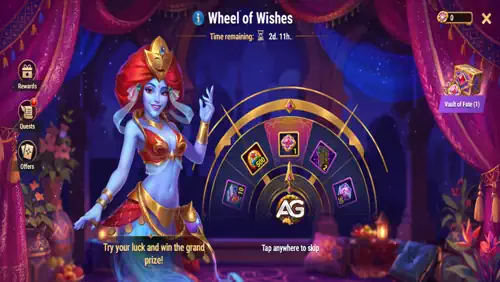
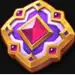
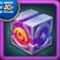

Guia do Evento Desejo do Destino para Hero Wars Dominion Era
- Por: Alexandre Domingos. .
Desejo do Destino e um evento por tempo limitado em Hero Wars: Dominion Era construido em torno de dois sistemas de recompensa: a Roda dos Desejos e o Cofre do Destino. Voce gira a roda com Moedas de Desejo, coleta recompensas e usa Selos do Destino para jogar o jogo de Amira, que mistura risco, recompensa garantida e a chance de premios ainda melhores.
Este guia explica como o evento funciona, como funciona a garantia do Selo do Destino, o que acontece com recursos nao usados e todas as cadeias de missoes com tabelas completas de recompensas e total ganho.

Resumo Rapido do Evento

Selo do DestinoConceitos Basicos
Voce pode acessar o Desejo do Destino pela tela principal do jogo enquanto o evento estiver ativo. Dentro do evento, a Roda dos Desejos permite gastar Moedas de Desejo para ter a chance de ganhar recompensas valiosas. Use o icone de Recompensas no menu do lado esquerdo para ver a lista completa de recompensas e a chance de obter cada item.
As Moedas de Desejo vem de duas fontes principais: completar missoes do evento e comprar ofertas especiais. O evento tambem tem um segundo recurso, o Selo do Destino, que pode ser ganho na Roda dos Desejos ou recebido em missoes do evento.
Um Selo do Destino permite entrar no Cofre do Destino e jogar com Amira. Amira oferece duas escolhas: uma recompensa visivel do lado esquerdo ou o Tesouro do Destino escondido do lado direito. A recompensa visivel e a opcao segura. O Tesouro do Destino e o risco: ele pode ser melhor que a recompensa visivel, mas tambem pode ser pior.
No Cofre do Destino, use o botao de lista na parte inferior da tela para ver todas as recompensas disponiveis do Cofre e suas chances de obtencao.
Garantia do Selo do Destino
A Roda dos Desejos tem uma regra de protecao contra azar para Selos do Destino. Se voce nao receber um Selo do Destino em 19 giros consecutivos, o 20º giro tem garantia de conter um Selo. Receber um Selo do Destino em qualquer momento reinicia o contador da garantia.
Se voce completar todas as cadeias de missoes listadas abaixo, pode ganhar ate 108 Moedas de Desejo em missoes. Se todas essas moedas forem usadas na roda, somente a garantia ja entrega pelo menos 5 Selos do Destino pelos giros, alem de 3 Selos do Destino recebidos diretamente nas missoes. Quedas aleatorias de Selo podem aumentar esse numero.
Conversao de Recursos Nao Usados
Quando o evento termina, os recursos do evento que nao foram usados sao convertidos automaticamente:
| Recurso Nao Usado | Conversao |
|---|---|
|
1 Moeda de Desejo
|
 2 Baus de Recursos de Heroi
2 Baus de Recursos de Heroi
|
|
1 Selo do Destino
|
1 Tesouro do Destino consumivel |
Missoes e Recompensas
O Desejo do Destino possui varias cadeias de missoes. Algumas sao missoes simples de login ou atividade, enquanto outras exigem pontos VIP, gasto de Esmeraldas, giros na roda e escolhas no Cofre do Destino. As tabelas abaixo mostram cada tarefa e o total de recompensas de cada cadeia.
Primeiro Movimento
| Tarefa | Recompensa |
|---|---|
| Faca login 1 vez durante um evento especial | Moeda de Desejo x1 |
| Faca login 2 vezes durante um evento especial | Moeda de Desejo x2 |
| Faca login 3 vezes durante um evento especial | Moeda de Desejo x2 |
| Total | Moeda de Desejo x5 |
Mais do que um Desejo
| Tarefa | Recompensa |
|---|---|
| Obtenha 50 pontos VIP | Moeda de Desejo x1 |
| Obtenha 100 pontos VIP | Moeda de Desejo x1 |
| Obtenha 300 pontos VIP | Moeda de Desejo x2 |
| Obtenha 600 pontos VIP | Moeda de Desejo x2 |
| Obtenha 1.000 pontos VIP | Moeda de Desejo x2 |
| Obtenha 1.500 pontos VIP | Moeda de Desejo x3 |
| Obtenha 2.000 pontos VIP | Moeda de Desejo x3 |
| Obtenha 3.000 pontos VIP | Moeda de Desejo x3 |
| Obtenha 4.500 pontos VIP | Moeda de Desejo x4 |
| Obtenha 6.000 pontos VIP | Moeda de Desejo x5 |
| Obtenha 7.500 pontos VIP | Moeda de Desejo x10 |
| Obtenha 9.000 pontos VIP | Selo do Destino x1 |
| Total | Moeda de Desejo x36Selo do Destino x1 |
Subornando o Destino
| Tarefa | Recompensa |
|---|---|
| Gaste 2.500 Esmeraldas | Moeda de Desejo x1 |
| Gaste 6.000 Esmeraldas | Moeda de Desejo x1 |
| Gaste 12.000 Esmeraldas | Moeda de Desejo x2 |
| Gaste 18.000 Esmeraldas | Moeda de Desejo x2 |
| Gaste 25.000 Esmeraldas | Moeda de Desejo x3 |
| Gaste 35.000 Esmeraldas | Moeda de Desejo x3 |
| Gaste 50.000 Esmeraldas | Moeda de Desejo x4 |
| Gaste 65.000 Esmeraldas | Moeda de Desejo x4 |
| Gaste 80.000 Esmeraldas | Moeda de Desejo x5 |
| Gaste 100.000 Esmeraldas | Moeda de Desejo x7 |
| Gaste 120.000 Esmeraldas | Moeda de Desejo x10 |
| Gaste 150.000 Esmeraldas | Selo do Destino x1 |
| Gaste 180.000 Esmeraldas | Selo do Destino x1 |
| Total | Moeda de Desejo x42Selo do Destino x2 |
Desejos se Realizam
| Tarefa | Recompensa |
|---|---|
| Gire a Roda dos Desejos 5 vezes |  Bau de Pedras de Skin x200 |
| Gire a Roda dos Desejos 10 vezes | Bau de Pedras de Skin x300 |
| Gire a Roda dos Desejos 20 vezes | Bau de Pedras de Skin x400 |
| Gire a Roda dos Desejos 30 vezes | Bau de Pedras de Skin x500 |
| Gire a Roda dos Desejos 40 vezes | Bau de Pedras de Skin x600 |
| Gire a Roda dos Desejos 50 vezes | Bau de Pedras de Skin x700 |
| Gire a Roda dos Desejos 75 vezes | Bau de Pedras de Skin x1.000 |
| Gire a Roda dos Desejos 100 vezes | Bau de Pedras de Skin x1.200 |
| Total | Bau de Pedras de Skin x4.900 |
Um Guia para o Mundo da Magia
| Tarefa | Recompensa |
|---|---|
| Jogue com Amira no Cofre do Destino 1 vez | Bau de Recursos de Heroi x5 |
| Jogue com Amira no Cofre do Destino 2 vezes | Bau de Recursos de Heroi x6 |
| Jogue com Amira no Cofre do Destino 3 vezes | Bau de Recursos de Heroi x8 |
| Jogue com Amira no Cofre do Destino 5 vezes | Bau de Recursos de Heroi x10 |
| Jogue com Amira no Cofre do Destino 7 vezes | Bau de Recursos de Heroi x12 |
| Jogue com Amira no Cofre do Destino 9 vezes | Bau de Recursos de Heroi x15 |
| Jogue com Amira no Cofre do Destino 11 vezes | Bau de Recursos de Heroi x20 |
| Jogue com Amira no Cofre do Destino 13 vezes | Bau de Recursos de Heroi x30 |
| Jogue com Amira no Cofre do Destino 15 vezes |  Presente do Dominio x1 Presente do Dominio x1 |
| Total | Bau de Recursos de Heroi x106Presente do Dominio x1 |
Vitoria Sobre o Destino
| Tarefa | Recompensa |
|---|---|
| Abra o Tesouro do Destino no jogo de Amira 1 vez |  Bau de Recursos de Tita x5 Bau de Recursos de Tita x5 |
| Abra o Tesouro do Destino no jogo de Amira 2 vezes | Bau de Recursos de Tita x6 |
| Abra o Tesouro do Destino no jogo de Amira 3 vezes | Bau de Recursos de Tita x8 |
| Abra o Tesouro do Destino no jogo de Amira 5 vezes | Bau de Recursos de Tita x10 |
| Abra o Tesouro do Destino no jogo de Amira 7 vezes | Bau de Recursos de Tita x12 |
| Abra o Tesouro do Destino no jogo de Amira 9 vezes | Bau de Recursos de Tita x15 |
| Abra o Tesouro do Destino no jogo de Amira 11 vezes | Bau de Recursos de Tita x20 |
| Abra o Tesouro do Destino no jogo de Amira 13 vezes | Bau de Recursos de Tita x30 |
| Abra o Tesouro do Destino no jogo de Amira 15 vezes |  Esfera de Invocacao de Espirito Elemental x1 Esfera de Invocacao de Espirito Elemental x1 |
| Total | Bau de Recursos de Tita x106Esfera de Invocacao de Espirito Elemental x1 |
Sonhador Incansavel
| Tarefa | Recompensa |
|---|---|
| Gaste 1.000 de Energia |  Bau Absoluto de Artefato x1 Bau Absoluto de Artefato x1 |
| Gaste 2.000 de Energia | Bau Absoluto de Artefato x2 |
| Gaste 4.000 de Energia | Bau Absoluto de Artefato x3 |
| Gaste 6.000 de Energia | Bau Absoluto de Artefato x5 |
| Gaste 8.000 de Energia | Bau Absoluto de Artefato x7 |
| Gaste 11.000 de Energia | Bau Absoluto de Artefato x10 |
| Gaste 14.000 de Energia | Moeda de Desejo x1 |
| Gaste 17.000 de Energia | Moeda de Desejo x1 |
| Gaste 20.000 de Energia | Moeda de Desejo x2 |
| Gaste 25.000 de Energia | Moeda de Desejo x3 |
| Gaste 30.000 de Energia | Moeda de Desejo x3 |
| Total | Bau Absoluto de Artefato x28Moeda de Desejo x10 |
Caminho para o Sonho
| Tarefa | Recompensa |
|---|---|
| Use Invocacao de Pet 10 vezes |  Grande Runa de Encantamento x5 Grande Runa de Encantamento x5 |
| Use Invocacao de Pet 20 vezes | Grande Runa de Encantamento x6 |
| Use Invocacao de Pet 30 vezes | Grande Runa de Encantamento x8 |
| Use Invocacao de Pet 40 vezes | Grande Runa de Encantamento x10 |
| Use Invocacao de Pet 50 vezes | Grande Runa de Encantamento x15 |
| Use Invocacao de Pet 100 vezes | Moeda de Desejo x1 |
| Use Invocacao de Pet 150 vezes | Moeda de Desejo x2 |
| Use Invocacao de Pet 200 vezes | Moeda de Desejo x3 |
| Use Invocacao de Pet 250 vezes | Moeda de Desejo x4 |
| Use Invocacao de Pet 300 vezes | Moeda de Desejo x5 |
| Total | Grande Runa de Encantamento x44Moeda de Desejo x15 |
Total de Recompensas de Todas as Cadeias de Missoes
Estes sao os totais maximos das cadeias de missoes listadas neste guia. Isso nao inclui recompensas aleatorias de giros da Roda dos Desejos, recompensas aleatorias do Cofre ou recompensas de ofertas compradas.
| Recompensa | Total |
|---|---|
Moeda de Desejo | 108 |
Selo do Destino | 3 |
Bau de Pedras de Skin | 4.900 |
| Bau de Recursos de Heroi | 106 |
| Presente do Dominio | 1 |
| Bau de Recursos de Tita | 106 |
| Esfera de Invocacao de Espirito Elemental | 1 |
| Bau Absoluto de Artefato | 28 |
| Grande Runa de Encantamento | 44 |
Melhor Estrategia para o Desejo do Destino
Para jogadores free-to-play, a abordagem mais segura e completar a cadeia de login, guardar Energia antes do evento quando possivel e usar Invocacao de Pet somente se voce ja tiver recursos suficientes preparados. As cadeias de VIP e Esmeraldas sao uteis, mas nao devem obrigar voce a gastar mais do que normalmente gastaria.
O detalhe mais importante e o Cofre do Destino. Jogar com Amira conta para a cadeia Um Guia para o Mundo da Magia, mas a cadeia Vitoria Sobre o Destino exige especificamente abrir o Tesouro do Destino escondido. Se voce sempre pegar a recompensa visivel, pode perder o progresso da cadeia do Tesouro.
Escolha a recompensa visivel quando for algo de que voce realmente precisa ou quando ela ja for de alto valor. Escolha o Tesouro do Destino quando estiver buscando a cadeia de missoes do Tesouro ou quando a recompensa visivel nao for importante o suficiente para proteger.
Dica importante do Cofre: quando Amira oferecer a escolha do Cofre do Destino, minha recomendacao e escolher o Tesouro do Destino escondido do lado direito. A chance de conseguir um item importante pode compensar a perda da recompensa visivel, especialmente porque isso tambem avanca a cadeia de missoes Vitoria Sobre o Destino. Eu aprendi isso do pior jeito enquanto criava este guia: perdi um Presente do Dominio depois de fazer a escolha errada.
Chances da Roda dos Desejos e do Cofre do Destino
As tabelas abaixo usam os valores oficiais de recompensa media por abertura. Para recompensas que caem como um unico item, a media pode ser lida como uma chance percentual aproximada. Para recompensas em quantidade, como Pocao de Tita ou Essencia dos Elementos, o valor e a quantidade media ganha por abertura, nao uma chance simples de queda.
Roda dos Desejos
A Roda dos Desejos e a loteria basica do Desejo do Destino. Cada giro custa 1 Moeda de Desejo. A roda tambem possui protecao contra azar: voce recebe pelo menos um Selo do Destino a cada 20 tentativas.
| Recompensa | Valor Oficial | Chance Aprox. / Media |
|---|---|---|
Selo do Destino | 0,050 | Cerca de 5,0% equivalente para um resultado de 1 Selo, alem da garantia de 20 giros. |
 Insignia do Desejo Insignia do Desejo | 0,52 | Media de 0,52 por giro. |
 Cristal do Desejo Cristal do Desejo | 0,77 | Media de 0,77 por giro. |
 Pedra de Skin de Tita Pedra de Skin de Tita | 61,5 | Media de 61,5 por giro. |
 Pocao de Tita Pocao de Tita | 76,9 | Media de 76,9 por giro. |
 Essencia dos Elementos Essencia dos Elementos | 153,8 | Media de 153,8 por giro. |
 Particula do Caos Particula do Caos | 2,19 | Media de 2,19 por giro. |
| Bau Absoluto de Artefato | 0,096 | Media de 0,096 por giro. |
 Nucleo do Caos Nucleo do Caos | 0,062 | Media de 0,062 por giro. |
Bau de Pedras de Skin | 1,04 | Media de 1,04 por giro. |
 Energia Engarrafada Energia Engarrafada | 0,050 | Media de 0,050 por giro. |
| Grande Runa de Encantamento | 0,15 | Media de 0,15 por giro. |
 Moeda do Torneio Elemental Moeda do Torneio Elemental | 38,5 | Media de 38,5 por giro. |
Cofre do Destino
O Cofre do Destino e a loteria avancada deste evento. Cada jogada custa 1 Selo do Destino. Amira pode mostrar uma recompensa conhecida do lado esquerdo, mas o Tesouro do Destino escondido do lado direito possui os premios de maior valor.
| Recompensa | Valor Oficial | Chance Aprox. / Media |
|---|---|---|
| Esfera de Invocacao de Espirito Elemental | 0,035 | Cerca de 3,5% equivalente para um resultado de 1 Esfera. |
| Presente do Dominio | 0,055 | Cerca de 5,5% equivalente para um resultado de 1 Presente. |
 Catalisador Primal Catalisador Primal | 6,00 | Media de 6,00 por abertura. |
 Catalisador Elemental Catalisador Elemental | 2,40 | Media de 2,40 por abertura. |
| Bau Absoluto de Artefato | 1,80 | Media de 1,80 por abertura. |
Bau de Pedras de Skin | 22,5 | Media de 22,5 por abertura. |
| Energia Engarrafada | 1,00 | Media de 1,00 por abertura. |
| Grande Runa de Encantamento | 3,00 | Media de 3,00 por abertura. |
Consideracoes Finais
O Desejo do Destino e um evento forte porque combina recompensas garantidas de missoes com recompensas aleatorias da roda e uma camada extra de premios no Cofre do Destino. As melhores recompensas ficam travadas atras de muita atividade ou gasto, mas mesmo uma participacao moderada pode trazer Moedas de Desejo, Baus de Pedras de Skin, Baus de Artefato e baus de recursos uteis.
A principal conclusao e simples: use as Moedas de Desejo antes do fim do evento, a menos que voce prefira a conversao automatica, acompanhe a garantia do Selo do Destino e, na maioria dos casos, priorize o Tesouro do Destino escondido quando Amira oferecer a escolha do Cofre.
Explore Mais Guias de Hero Wars Dominion Era

 Tier List de Hero Wars: Dominion Era - Melhores Herois Ranqueados
Tier List de Hero Wars: Dominion Era - Melhores Herois Ranqueados
 Guia de Habilidades de Fusao de Totem para Hero Wars: Dominion Era
Guia de Habilidades de Fusao de Totem para Hero Wars: Dominion Era
Deixe sua Opiniao!
Voce gostou do nosso guia do evento Desejo do Destino para Hero Wars Dominion Era? Tem algo que voce nao entendeu ou gostaria de sugerir? Participe da secao de comentarios no Alexandre Games e compartilhe sua opiniao.